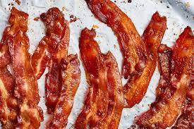

History of Bacon
Bacon's simpliest form was fist made in China as salted stripps of pork belly. However, the name for bacon at the time meant all pork products. It wasn't until John Harris made the world's first commercial bacon processing plant in the 1700s in Calne, Wiltshire.

What is Bacon?
Bacon is a type of salt-cured pork made from various cuts, typically the belly or less fatty parts of the back. It is eaten as a side dish (particularly in breakfasts), used as a central ingredient (e.g., the BLT sandwich), or as a flavouring or accent. Regular bacon consumption is associated with increased mortality and other health concerns
Ingredients
- Thick cut Bacon
- Brown sugar
- Maple syrup
- Cayenne pepper
- Black pepper
- Red Peper Flakes
Directions
- Preheat your oven to the temperature the bacon package says and then add brown sugar, black pepper, cayenne pepper, red pepper flake and maple syrup to a mixing bowl
- Combine the sugar, syrup and spices until well combined. The mixture will be moist, but slightly lumpy.
- Cover a baking sheet with parchment paper, then lay out bacon strips in a single layer.
- Spread sugar, syrup and spice mixture out over the bacon, using your hand to pat it out as evenly as possible.
- Bake for 20 to 30 minutes until as crispy as you like, then transfer to a baking rack to cool slightly before serving.